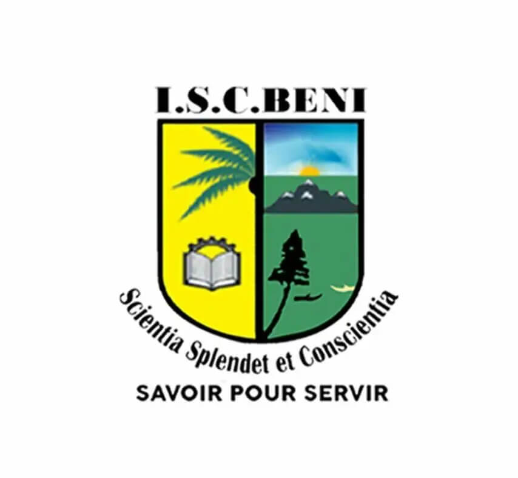

Mon Parcours à l'ISC BENI
Cliquez sur une année pour découvrir mon parcours en détail.

Licence 1
Découverte de l'informatique
Algorithmique, Programmation en C#,java,html,css et la programmation orientée objet.
Découvrir
Licence 2
Approfondissement & Projet
Bases de données (SQL/MERISE), POO (Java/PHP), Réseaux informatiques et Développement Web.
DécouvrirLicence 3
Spécialisation & Projet Final
Architectures Web complexes, Gestion de projet Agile, Stage de fin de cycle et Projet de fin d'études.
Découvrir
Une aventure collective
L'ISC BENI, c'est avant tout une grande famille. Cette photo (Licence 3) représente la fin d'un cycle. Des souvenirs inoubliables, des amitiés solides et un savoir-faire acquis ensemble devant le panneau de notre institution.